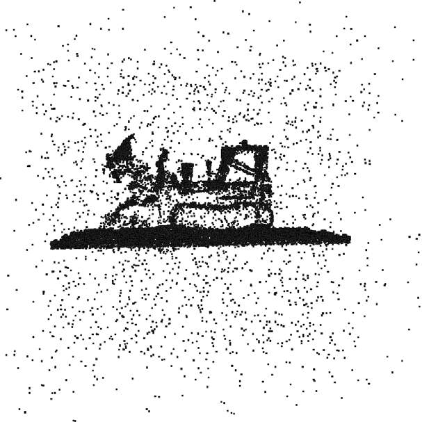
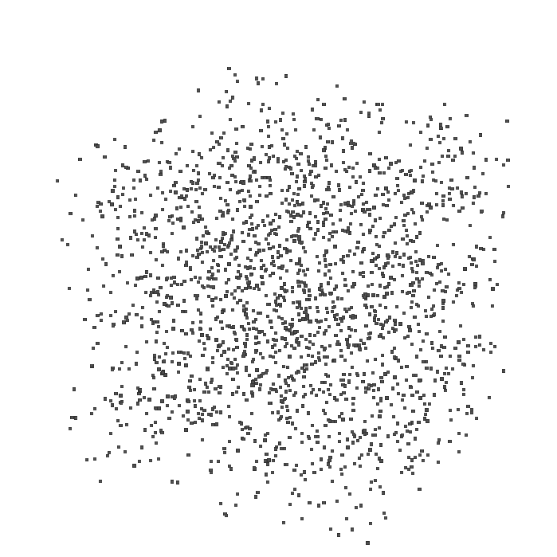
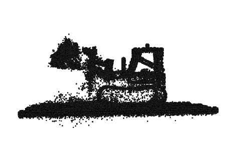
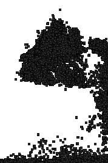
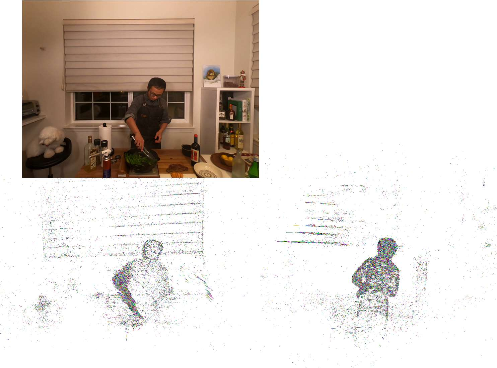

4D Gaussian Splatting for Real-Time Dynamic Scene Rendering
论文信息
- 作者: Guanjun Wu, Taoran Yi, Jiemin Fang, Lingxi Xie, Xiaopeng Zhang, Wei Wei, Wenyu Liu, Qi Tian, Xinggang Wang
- 单位: 华中科技大学、华为
- arXiv: 2310.08528
- 代码: https://guanjunwu.github.io/4dgs/
一句话总结
提出 4D Gaussian Splatting (4D-GS) 方法，通过结合 3D 高斯表示和 4D 神经体素，在单个 RTX 3090 GPU 上实现动态场景的实时渲染（最高 82 FPS）。
背景知识（让零基础也能看懂）
什么是"新视角合成"(Novel View Synthesis)？
想象你有一组从不同角度拍摄的照片，比如一个跳舞的人。你想看到这个人从侧面或背后看到的样子——但你没有拍过那些角度的照片。新视角合成的任务就是用 AI 生成这些"不存在"的视角图片。
这项技术在 VR/AR、电影特效等领域非常重要。
什么是"动态场景"？
普通的 3D 重建只能处理静止不动的场景（比如一座雕塑）。但现实世界中大多数场景都是动态的——人在走动、物体在运动。
动态场景的难点在于：不仅要重建空间信息，还要捕捉时间维度上的变化。
什么是 NeRF？
NeRF (Neural Radiance Fields) 是 2020 年提出的一种革命性方法，用神经网络来隐式表示 3D 场景。它的工作原理是：
- 将 3D 空间中的每个点 $(x, y, z)$ 映射到颜色和密度
- 使用体素渲染（Volume Rendering）技术从任意视角"合成"图像
问题：NeRF 训练很慢（通常需要几小时甚至几天），渲染也很慢（每秒只能渲染几张图），无法实时应用。
什么是 3D Gaussian Splatting (3D-GS)？
2023 年提出的 3D Gaussian Splatting 是一种更高效的方法：
- 用高斯分布（Gaussian）来表示 3D 场景中的点
- 用可微分的泼溅（Differentiable Splatting）技术直接将 3D 高斯投影到 2D 平面
- 不需要耗时的体素渲染，可以实时渲染
但 3D-GS 只适用于静态场景，无法处理动态内容。
什么是 4D？
我们平时说的 3D 是三维空间 $(x, y, z)$。加上时间维度 $t$，就是 4D。
所以 "4D 场景" = "3D 空间 + 时间变化"
核心问题
现有的方法存在以下问题：
- NeRF 类方法：训练慢、渲染慢，无法实时
- 3D-GS：只能处理静态场景
- 扩展 3D-GS 到动态场景：需要在每个时间点都构建一套 3D 高斯，存储成本呈线性增长（时间越长，存储越多）
核心挑战：如何在保持实时渲染能力的同时，处理动态场景？
方法详解
核心思想
不是为每个时间点都存储一套完整的 3D 高斯，而是：
- 维护一套canonical（标准）3D高斯
- 用一个变形网络来描述高斯如何随时间移动和变形
这样，存储成本就与时间无关了！
方法流程图
graph TB
subgraph Input
G[原始3D高斯 G]
t[时间戳 t]
end
subgraph "时空结构编码器 H"
G --> |"中心坐标 X"| R1["多分辨率HexPlane R(i,j)"]
t --> |"时间信息"| R1
R1 --> |"体素特征"| MLP["小型MLP φd"]
end
MLP --> |"融合特征 fd"| D["多头高斯变形解码器 D"]
subgraph "多头解码器"
D --> |"fd"| DX["ΔX 位置变形"]
D --> |"fd"| DR["Δr 旋转变形"]
D --> |"fd"| DS["Δs 缩放变形"]
end
DX --> |"X + ΔX"| GX["变形后的位置 X'"]
DR --> |"r + Δr"| GR["变形后的旋转 r'"]
DS --> |"s + Δs"| GS["变形后的缩放 s'"]
GX --> |"X', r', s', α, C"| SG["变形后的3D高斯 G'"]
SG --> |"可微分泼溅"| Output["渲染图像 I"]
关键技术 1：时空结构编码器 (Spatial-Temporal Structure Encoder)
灵感来自 HexPlane/K-Planes 方法，将 4D 神经体素分解为 6 个 2D 平面：
- 空间平面：$(x,y)$, $(x,z)$, $(y,z)$
- 时空平面：$(x,t)$, $(y,t)$, $(z,t)$
每个 3D 高斯的位置 $(x,y,z)$ 和时间 $t$ 可以在这些平面中查询到对应的特征。
关键技术 2：多头高斯变形解码器 (Multi-head Gaussian Deformation Decoder)
变形包括三个部分：
- 位置变形 $\Delta X$：高斯移动到新位置
- 旋转变形 $\Delta r$：高斯朝向改变
- 缩放变形 $\Delta s$：高斯大小/形状改变
变形公式： $$\left( X', r', s' \right) = \left( X + \Delta X, r + \Delta r, s + \Delta s \right)$$
关键技术 3：两阶段优化
- Warm-up 阶段（前 3000 次迭代）：只用静态 3D 高斯训练
- 完整训练：开启完整的 4D 变形学习
这样做的好处是让动态部分的学习更稳定。
实验结果
性能对比（合成数据集）
| 方法 | PSNR (dB) | SSIM | 训练时间 | FPS | 存储 (MB) |
|---|---|---|---|---|---|
| TiNeuVox-B | 32.67 | 0.97 | 28 min | 1.5 | 48 |
| K-Planes | 31.61 | 0.97 | 52 min | 0.97 | 418 |
| 3D-GS | 23.19 | 0.93 | 10 min | 170 | 10 |
| Ours (4D-GS) | 34.05 | 0.98 | 8 min | 82 | 18 |
关键优势：
- 最高渲染质量（PSNR 最高）
- 极快的渲染速度（82 FPS 实时）
- 合理的训练时间（8 分钟）
- 紧凑的存储（18 MB）
视觉效果对比

从左到右：Ours、TiNeuVox、Ground Truth、K-Planes、HexPlane、3D-GS
可以看到 4D-GS 渲染的图像最接近 Ground Truth（真实图像）。

优化过程：从随机初始化的 3D 高斯逐渐学习到正确的结果。
技术细节
3D 高斯的数学表示
一个 3D 高斯由以下属性定义：
- 位置 $X \in \mathbb{R}^3$：高斯的中心点
- 颜色 $C$：用球谐函数 (SH) 系数表示
- 不透明度 $\alpha \in \mathbb{R}$：控制透明度
- 旋转 $r \in \mathbb{R}^4$：用四元数表示
- 缩放 $s \in \mathbb{R}^3$：三个方向的缩放因子
高斯的形状由协方差矩阵 $\Sigma$ 决定： $$\Sigma = RS S^T R^T$$
其中 $R$ 是旋转矩阵，$S$ 是缩放矩阵。
渲染公式
对于每个像素，渲染颜色 $C$ 的公式： $$C = \sum_{i \in N} c_i \alpha_i \prod_{j=1}^{i-1}(1 - \alpha_j)$$
这里 $N$ 是覆盖该像素的有序高斯集合，$c_i$ 和 $\alpha_i$ 是每个高斯的颜色和不透明度。
损失函数
$$\mathcal{L} = \left| \hat{I} - I \right| + \mathcal{L}_{tv}$$
- $\left| \hat{I} - I \right|$：L1 颜色损失
- $\mathcal{L}_{tv}$：基于网格的总变差损失（来自 K-Planes）
应用场景
1. 单目动态场景渲染
从一段视频中重建整个动态场景，可以从任意角度观看。
2. 3D 跟踪
跟踪场景中物体的 3D 运动轨迹：

3. 4D 编辑
对动态场景进行编辑，添加新物体或修改场景：

性能分析
FPS 与高斯数量的关系

当 3D 高斯数量少于 30,000 时，渲染速度可达 90 FPS。
这为实际应用提供了很好的参考：
- 简单场景 → 高 FPS
- 复杂场景 → 降低 FPS 但保持质量
局限性与未来工作
当前局限
- 大运动：对于运动幅度很大的场景，训练困难
- 缺少背景点：如果没有足够的背景点，效果下降
- 相机位姿不准确：影响重建质量
- 单目设置下的动静分离：静态和动态物体难以自动分离
- 大规模场景：城市级重建需要更紧凑的算法
未来方向
- 更好的动静分离方法
- 更紧凑的表示以支持大规模场景
- 与其他编辑工具的结合
总结
4D-GS 的核心贡献：
- 提出了一个高效的 4D 高斯泼溅框架，在单一 GPU 上实现实时动态场景渲染
- 设计了 时空结构编码器，用多分辨率 HexPlane 连接相邻高斯
- 开发了 多头变形解码器，分别预测位置、旋转、缩放变形
- 在多个数据集上达到 SOTA 质量，同时保持 82 FPS 的实时渲染能力
为什么重要：
- 首次将 3D-GS 的实时渲染能力扩展到动态场景
- 为 VR/AR、电影制作等应用提供了实用方案
- 开源代码，促进社区发展
参考
如果你想深入学习，建议按以下顺序阅读：
- NeRF (Mildenhall et al., ECCV 2020) - 理解隐式场景表示的基础
- 3D Gaussian Splatting (Kerbl et al., SIGGRAPH 2023) - 理解高斯泼溅基础
- HexPlane/K-Planes - 理解时空特征编码
- 4D-GS (本文) - 理解如何结合两者
本笔记由 AI 自动生成，如有疏漏请指正。